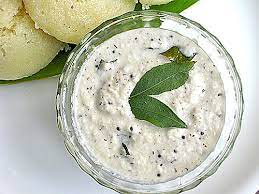

Chutney for the win

Description
chutney is a popular side dish which goes along well with dosa, it is given with dosa at all restaurants and shares a beautiful relationship with Dosa
It is made with coconut, peanut, mustard, curry leaves and chilli and can get real spicy sometimes.
Ingredients
- Coconut
- Peanut
- chilli
- mustard
- curry leaves
Steps
- Roast the peanuts and remove seed coat
- Grind the peanut, add some water, add coconut, chilli and grind them together
- take a small pan and add 2 teaspoons of oil and add mustard and curry leaves to it once the oil is well boiling
- pour the oil mustard mix to the grinded chutney and add some salt
- Mix and serve with dosa